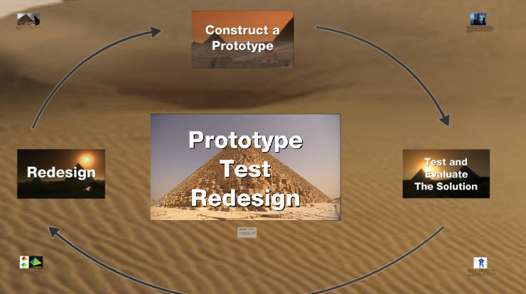

Foundations of Engineering and Technology is the introductory course for all Georgia Engineering and Technology Education pathways. This course provides students with opportunities to develop fundamental technological literacy as they learn about the history, systems, and processes of invention and innovation. Students will integrate mathematics, science and engineering concepts as they make real world connections in their introduction and exploration of technological systems.
Engineering Concepts is the second course in the Engineering and Technology Pathway. Students will learn to design technical solutions to engineering problems using a whole systems approach to engineering design. Students will demonstrate the application of mathematical tools, teamwork, and communications skills in solving various design challenges, while maintaining a safe work environment. The prerequisite for this course is Foundations of Engineering and Technology.
Engineering Applications is the third course in the Engineering and Technology Pathway. Students will apply their knowledge of Science, Technology, Engineering, and Math (STEM) to develop solutions to technological problems. Solutions will be developed using a combination of engineering software and prototype production processes. Students will use market research, cost benefit analysis, and an understanding of the design cycle to create and present design, marketing, and business plans for their solutions. A capstone project will allow students to demonstrate their depth of knowledge of the engineering design process and prepare them for future opportunities in the field of engineering. The prerequisite for this course is Engineering Concepts.